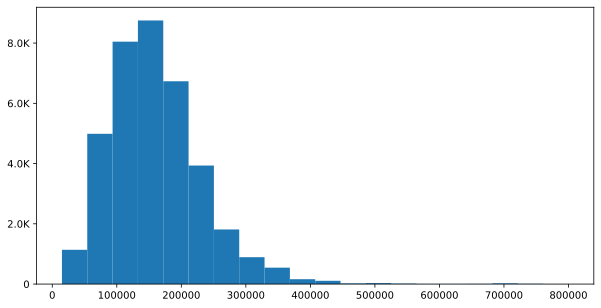
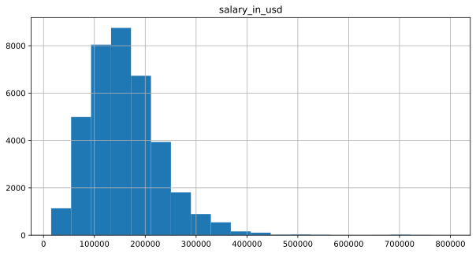
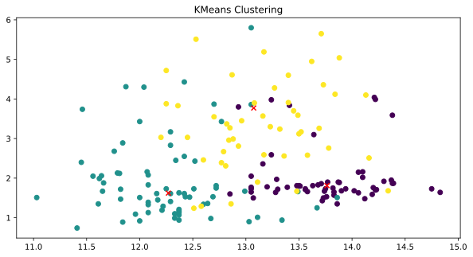

Основи великих даних з PySpark
Моделі та методи обробки великих даних
Ігор Мірошниченко
КНУ імені Тараса Шевченка, ФІТ
Вступ до аналізу великих даних за допомогою Spark
Що таке великі дані?
Великі дані — набори інформації (як структурованої, так і неструктурованої) настільки великих розмірів, що традиційні способи та підходи (здебільшого засновані на рішеннях класу бізнесової аналітики та системах управління базами даних) не можуть бути застосовані до них - Wikipedia
Три «V» великих даних
- Обсяг (Volume) — обсяг даних, які потрібно зберігати та обробляти. Це може бути величезна кількість даних, що перевищує можливості традиційних систем зберігання.
- Швидкість (Velocity) — швидкість, з якою дані генеруються та обробляються. Це може бути потік даних у реальному часі або дані, які надходять з різних джерел.
- Різноманітність (Variety) — різноманітність типів даних, які потрібно обробляти. Це можуть бути структуровані, напівструктуровані та неструктуровані дані з різних джерел.
Концепції та термінологія великих даних
- Кластерні обчислення: Об’єднання ресурсів декількох машин
- Паралельні обчислення: Одночасні обчислення на одному комп’ютері
- Розподілені обчислення: Сукупність вузлів (мережевих комп’ютерів), які працюють паралельно
- Пакетна обробка: Розбиття завдання на невеликі частини і запуск їх на окремих машинах
- Обробка в реальному часі: Негайна обробка даних
Системи обробки великих даних
- Hadoop/MapReduce: Масштабований та відмовостійкий фреймворк на Java
- Відкритий вихідний код
- Пакетна обробка
- Apache Spark: Універсальна та швидка кластерна обчислювальна система
- Відкритий вихідний код
- Пакетна обробка даних та обробка даних у реальному часі
Примітка
Apache Spark на сьогоднішній день є кращим за Hadoop/MapReduce у більшості випадків, оскільки він швидший, простіший у використанні та підтримує різноманітні джерела даних.
Особливості фреймворку Apache Spark
- Фреймворк розподілених кластерних обчислень
- Ефективні обчислення в пам’яті для великих масивів даних
- Блискавична платформа для обробки даних
- Забезпечує підтримку Java, Scala, Python, R та SQL
Компоненти Apache Spark
Режими розгортання Spark
- Локальний режим: Одна машина, наприклад, ваш ноутбук
- Локальна модель зручна для тестування, налагодження та демонстрації
- Кластерний режим: Набір заздалегідь визначених машин
- Добре підходить для реальних сценаріїв, коли потрібно обробляти великі обсяги даних
- Робочий процес: Локально \(\rightarrow\) кластери
- Не потрібно змінювати код
PySpark: Spark з Python
Огляд PySpark
- Apache Spark написано на Scala
- Для підтримки Python зі Spark, спільнота Apache Spark випустила PySpark
- Подібна швидкість та потужність обчислень до Scala
- API PySpark схожі на Pandas та Scikit-learn
Що таке оболонка Spark?
- Інтерактивне середовище для виконання завдань Spark
- Допомагає для швидкого інтерактивного прототипування
- Оболонки Spark дозволяють взаємодіяти з даними на диску або в пам’яті
- Три різні оболонки Spark:
- Spark-оболонка для Scala
- PySpark-оболонка для Python
- SparkR для R
PySpark shell
- Оболонка PySpark — це інструмент командного рядка на основі Python
- Оболонка PySpark дозволяє аналітикам даних взаємодіяти зі структурами даних Spark
- PySpark shell підтримує підключення до кластера
Розуміння SparkContext
- SparkContext — це точка входу у світ Spark
- Точка входу — це спосіб підключення до кластера Spark
- Точка входу — це як ключ до будинку
- PySpark має SparkContext за замовчуванням, який називається
sc
Перевірка SparkContext
- Версія: Щоб отримати версію SparkContext
Welcome to
____ __
/ __/__ ___ _____/ /__
_\ \/ _ \/ _ `/ __/ '_/
/__ / .__/\_,_/_/ /_/\_\ version 3.5.5
/_/
Using Python version 3.11.4 (tags/v3.11.4:d2340ef, Jun 7 2023 05:45:37)
Spark context Web UI available at http://AranaurPC:4040
Spark context available as 'sc' (master = local[*], app id = local-1745489304985).
SparkSession available as 'spark'.- Версія Python:
- Майстер: URL кластера або локального рядка для запуску у локальному режимі SparkContext
Завантаження даних у PySpark
- Метод SparkContext
parallelize()
- Метод
textFile()SparkContext
Функціональне програмування у Python
Що таке анонімні функції в Python?
- Лямбда-функції — анонімні функції в Python
- Дуже потужна функція, яка використовується у Python. Досить ефективні з
map()таfilter() - Лямбда-функції створюють функції для подальшого виклику подібно до
def - Повертає функції без імені (тобто анонімні)
Синтаксис лямбда-функції
- Загальний вигляд лямбда-функції має вигляд
- Приклад лямбда-функції
Різниця між функціями def та lambda
- Код на Python для ілюстрації куба числа
- Немає оператора повернення для лямбда-функції
- Можна розміщувати лямбда-функцію будь-де
map()
map()застосовує функцію до всіх елементів у вхідному списку- Загальний синтаксис
map()
- Приклад
map()
filter()
- функція
filter()отримує функцію та список і повертає новий список, для якого функція повертає значенняtrue - Загальний синтаксис
filter()
- Приклад
filter()
Програмування в PySpark RDD
Що таке RDD?
- RDD (Resilient Distributed Datasets) — це основна структура даних у Spark
Декомпозиція RDD
- Стійкі розподілені набори даних
- Відмовостійкість: Здатність протистояти збоям
- Розподілені: Розподілені між декількома машинами
- Набори даних: Колекція розділених даних, наприклад, масивів, таблиць, кортежів тощо.
Створення RDD. Як це зробити?
- Розпаралелювання існуючої колекції об’єктів
- Зовнішні набори даних:
- Файли в HDFS
- Об’єкти в Amazon S3 bucket
- рядки в текстовому файлі
- З існуючих RDD
Розпаралелений збір (розпаралелювання)
parallelize()для створення RDD зі списків на Python
Із зовнішніх наборів даних
textFile()для створення RDD із зовнішніх наборів даних
Розуміння партицій у PySpark
Партиція (Partition) — це логічний поділ великого розподіленого набору даних
метод
parallelize()
- метод
textFile()
Кількість партицій в RDD можна дізнатися за допомогою методу getNumPartitions()
RDD operations in PySpark
Огляд PySpark operations
- Перетворення створюють нові RDD
- Дії виконують обчислення на RDD
RDD Transformations
- Трансформації виконують ліниві обчислення
- Базові перетворення RDD
map()filter()flatMap()union()
map()
- перетворення
map()застосовує функцію до всіх елементів у RDD
filter()
filter()повертає новий RDD з елементами, які відповідають умові
flatMap()
flatMap()перетворює RDD у новий RDD, де кожен елемент може бути розгорнутий у кілька елементів
union()
union()об’єднує два RDD в один
RDD Actions
Це операції, які повертають значення після виконання обчислень на RDD
- Базові дії з RDD
collect()take(N)first()count()
collect() та take()
collect()повертає всі елементи набору даних у вигляді масивуtake(N)повертає масив першихNелементів набору даних
first() та count()
first()виводить перший елемент RDD
count()повертає кількість елементів у RDD
Робота з Pair RDD в PySpark
Вступ до Pair RDD у PySpark
- Реальні набори даних зазвичай є парами ключ/значення
- Кожен рядок є ключем і співвідноситься з одним або декількома значеннями
- Pair RDD — це спеціальна структура даних для роботи з такими наборами даних
- Pair RDD: ключ — це ідентифікатор, а значення — це дані
Створення Pair RDD
- Два найпоширеніші способи створення парних RDD
- Зі списку кортежу ключ-значення
- Зі звичайного RDD
- Отримання даних у формі ключ/значення для парного RDD
Перетворення Pair RDD
- Всі регулярні перетворення працюють на парі RDD
- Потрібно передавати функції, які оперують парами значень ключів, а не окремими елементами
- Приклади парних перетворень RDD
reduceByKey(func): Об’єднує значення з однаковим ключемgroupByKey(): Згрупувати значення з однаковим ключемsortByKey(): Повернути RDD, відсортований за ключемjoin(): Об’єднати дві пари RDD на основі їх ключа
reduceByKey(func)
reduceByKey(func)об’єднує значення з однаковим ключем- Він виконує паралельні операції для кожного ключа в наборі даних
- Це перетворення, а не дія
sortByKey()
sortByKey()повертає RDD, відсортований за ключем
groupByKey()
groupByKey()згруповує значення з однаковим ключем
join()
join()об’єднує дві пари RDD на основі їх ключа
Додаткові дії (actions)
reduce()
reduce()об’єднує всі елементи RDD в один- Функція повинна бути комутативною (зміна порядку операндів не змінює результат) та асоціативною
saveAsTextFile()
saveAsTextFile()зберігає RDD у текстовому файлі
coalesce()можна використовувати для збереження RDD у вигляді одного текстового файлу
Action операції над парами RDD
- Action RDD, доступні для парних RDD у PySpark
- Парні дії RDD використовують дані ключ-значення
- Кілька прикладів дій парного RDD включають
countByKey()collectAsMap()
countByKey()
countByKey()доступний тільки для типу Pair RDDcountByKey()підраховує кількість елементів для кожного ключа
collectAsMap()
collectAsMap()повернути пари ключ-значення в RDD у вигляді словника
PySpark SQL та DataFrames
PySpark DataFrames
- PySpark SQL — це бібліотека Spark для структурованих даних. Вона надає більше інформації про структуру даних та обчислення
- PySpark DataFrame — незмінна розподілена колекція даних з іменованими стовпцями
- Призначений для обробки як структурованих (наприклад, реляційна база даних), так і напівструктурованих даних (наприклад, JSON)
- API фреймів даних доступний у Python, R, Scala та Java
- DataFrames в PySpark підтримують як SQL запити (
SELECT * from table), так і вирази методи (df.select())
SparkSession — точка входу для API DataFrame
- SparkContext є основною точкою входу для створення RDD
- SparkSession забезпечує єдину точку входу для взаємодії з фреймами даних Spark
- SparkSession використовується для створення DataFrame, реєстрації DataFrame, виконання SQL запитів
- SparkSession доступний в оболонці PySpark як spark
Створення DataFrame
- Два різні методи створення DataFrame в PySpark
- З існуючих RDD за допомогою методу
createDataFrame()SparkSession - З різних джерел даних (CSV, JSON, TXT) за допомогою методу
read()SparkSession
- З існуючих RDD за допомогою методу
- Схема контролює дані і допомагає DataFrames оптимізувати запити
- Схема надає інформацію про назву стовпця, тип даних у стовпці, порожні значення тощо.
Створення DataFrame
from pyspark.sql import SparkSession
spark = SparkSession.builder.appName("DataFrame").getOrCreate()
iphones_RDD = sc.parallelize([
("XS", 2018, 5.65, 2.79, 6.24),
("XR", 2018, 5.94, 2.98, 6.84),
("X10", 2017, 5.65, 2.79, 6.13),
("8Plus", 2017, 6.23, 3.07, 7.12)
])
names = ['Model', 'Year', 'Height', 'Width', 'Weight']
iphones_df = spark.createDataFrame(iphones_RDD, schema=names)
type(iphones_df)pyspark.sql.dataframe.DataFrameDataFrame з CSV/JSON/TXT
- Шлях до файлу та два необов’язкові параметри
- Два необов’язкові параметри
header=TrueinferSchema=True
Взаємодія з DataFrame
Оператори DataFrame у PySpark
- Операції з DataFrame: Перетворення та дії
- Перетворення фрейму даних:
select()filter()groupby()orderby()dropDuplicates()withColumnRenamed()
- Дії з фреймом даних:
head()show()count()columnsdescribe()
Примітка
printSchema() є методом для будь-якого набору даних/фрейму даних Spark
select() та show()
select()вибирає стовпці з DataFrameshow()виводить перші рядки DataFrame
from pyspark.sql import SparkSession
from datetime import date as sysdate
spark = SparkSession.builder.appName("DataFrame").getOrCreate()
people = spark.read.csv("data/people.csv", header=True, inferSchema=True)
people.select('name').show(5)+--------------+
| name|
+--------------+
|Penelope Lewis|
| David Anthony|
| Ida Shipp|
| Joanna Moore|
|Lisandra Ortiz|
+--------------+
only showing top 5 rows
filter()
filter()вибирає рядки з DataFrame, які відповідають умові
+---+---------+-----------------+------+-------------------+
|_c0|person_id| name| sex| date of birth|
+---+---------+-----------------+------+-------------------+
| 0| 100| Penelope Lewis|female|1990-08-31 00:00:00|
| 2| 102| Ida Shipp|female|1962-05-24 00:00:00|
| 3| 103| Joanna Moore|female|2017-03-10 00:00:00|
| 4| 104| Lisandra Ortiz|female|2020-08-05 00:00:00|
| 11| 111|Annabelle Rosseau|female|1989-07-13 00:00:00|
+---+---------+-----------------+------+-------------------+
only showing top 5 rows
groupby() та count()
orderby()
+-----+---------+---------------+------+-------------------+
| _c0|person_id| name| sex| date of birth|
+-----+---------+---------------+------+-------------------+
|57359| 57459| Sharon Perez|female|1899-08-28 00:00:00|
|62233| 62333|Martina Morison|female|1901-04-21 00:00:00|
|96318| 96418| Lisa Garrett|female|1901-05-09 00:00:00|
|39703| 39803| Naomi Davis|female|1902-04-25 00:00:00|
|64563| 64663| Brenda French|female|1902-07-27 00:00:00|
+-----+---------+---------------+------+-------------------+
only showing top 5 rows
dropDuplicates()
withColumnRenamed()
withColumnRenamed()перейменовує стовпець у DataFrame
+---+---------+--------------+------+-------------------+
|_c0|person_id| name| sex| dob|
+---+---------+--------------+------+-------------------+
| 0| 100|Penelope Lewis|female|1990-08-31 00:00:00|
| 1| 101| David Anthony| male|1971-10-14 00:00:00|
| 2| 102| Ida Shipp|female|1962-05-24 00:00:00|
| 3| 103| Joanna Moore|female|2017-03-10 00:00:00|
| 4| 104|Lisandra Ortiz|female|2020-08-05 00:00:00|
+---+---------+--------------+------+-------------------+
only showing top 5 rows
printSchema()
columns
columnsповертає список стовпців у DataFrame
describe()
describe()повертає статистику для числових стовпців у DataFrame
+-------+-----------------+-----------------+-------------+------+
|summary| _c0| person_id| name| sex|
+-------+-----------------+-----------------+-------------+------+
| count| 100000| 100000| 100000| 98080|
| mean| 49999.5| 50099.5| NULL| NULL|
| stddev|28867.65779668774|28867.65779668774| NULL| NULL|
| min| 0| 100|Aaron Addesso|female|
| max| 99999| 100099| Zulma Biggs| male|
+-------+-----------------+-----------------+-------------+------+
PySpark SQL
DataFrame API vs SQL запити
- У PySpark ви можете взаємодіяти з SparkSQL через DataFrame API та SQL запити
- DataFrame API надає програмну мову, специфічну для домену (DSL) для даних
- Перетворення та дії DataFrame легше конструювати програмно
- SQL-запити можуть бути стислими, простішими для розуміння та перенесення
- Операції над DataFrame також можна виконувати за допомогою SQL запитів
SQL запити
- Метод SparkSession
sql()виконує SQL-запит - Метод
sql()отримує SQL-запит як аргумент і повертає результат у вигляді DataFrame
people.createOrReplaceTempView("people")
df_sql = spark.sql("SELECT * FROM people LIMIT 5")
df_sql.show()+---+---------+--------------+------+-------------------+
|_c0|person_id| name| sex| dob|
+---+---------+--------------+------+-------------------+
| 0| 100|Penelope Lewis|female|1990-08-31 00:00:00|
| 1| 101| David Anthony| male|1971-10-14 00:00:00|
| 2| 102| Ida Shipp|female|1962-05-24 00:00:00|
| 3| 103| Joanna Moore|female|2017-03-10 00:00:00|
| 4| 104|Lisandra Ortiz|female|2020-08-05 00:00:00|
+---+---------+--------------+------+-------------------+
SQL-запит
Групування та агрегація
Фільтрація
query = '''SELECT * FROM people WHERE dob > '2000-01-01' '''
df_sql = spark.sql(query)
df_sql.show(5)+---+---------+-----------------+------+-------------------+
|_c0|person_id| name| sex| dob|
+---+---------+-----------------+------+-------------------+
| 3| 103| Joanna Moore|female|2017-03-10 00:00:00|
| 4| 104| Lisandra Ortiz|female|2020-08-05 00:00:00|
| 9| 109| Everett Vadala| male|2005-05-24 00:00:00|
| 10| 110| Freddie Claridge| male|2002-05-07 00:00:00|
| 17| 117|Florence Eberhart|female|2024-06-01 00:00:00|
+---+---------+-----------------+------+-------------------+
only showing top 5 rows
Візуалізація даних у PySpark
Візуалізація даних у PySpark
Побудова графіків за допомогою фреймів даних PySpark виконується трьома методами
- бібліотека
pyspark_dist_explore toPandas()- бібліотека
HandySpark
pyspark_dist_explore
pyspark_dist_explore— це бібліотека для візуалізації даних у PySpark- Наразі доступні три функції:
hist(),distplot()таpandas_histogram()
pyspark_dist_explore

toPandas()
Примітка
Якщо ви маєте великі обсяги даних, використовувати toPandas() не рекомендується
Pandas vs PySpark
- Pandas DataFrames — це односерверні структури в пам’яті, що базуються на одному сервері, а операції над PySpark виконуються паралельно
- Результат генерується, коли ми застосовуємо будь-яку операцію в Pandas, в той час як операції в PySpark DataFrame є лінивими
- Pandas DataFrame є змінюваним, а PySpark DataFrame є незмінним
- Pandas API підтримує більше операцій, ніж PySpark Dataframe API
PySpark MLlib
Огляд PySpark MLlib
- MLlib - це компонент Apache Spark для машинного навчання
- До складу MLlib входять різноманітні інструменти:
- Алгоритми ML: спільна фільтрація, класифікація та кластеризація
- Функціоналізація: вилучення ознак, перетворення, зменшення розмірності та вибірка
- Конвеєри: інструменти для побудови, оцінки та налаштування конвеєрів ML
Чому PySpark MLlib?
- Scikit-learn - популярна бібліотека Python для інтелектуального аналізу даних та машинного навчання
- Алгоритми Scikit-learn працюють тільки для невеликих наборів даних на одній машині
- Алгоритми MLlib Spark призначені для паралельної обробки на кластері
- Підтримує такі мови, як Scala, Java та R
- Надає високорівневий API для побудови конвеєрів машинного навчання
Алгоритми PySpark MLlib
- Класифікація (бінарна та багатокласова) та регресія: ЛLinear SVMs, logistic regression, decision trees, random forests, gradient-boosted trees, naive Bayes, linear least squares, Lasso, ridge regression, isotonic regression
- Колаборативна фільтрація: Алгоритм змінних найменших квадратів (Alternating least squares, ALS)
- Кластеризація: K-means, Gaussian mixture, Bisecting K-means and Streaming K-Means
Три «С» машинного навчання в PySpark MLlib
- Collaborative filtering (рекомендаційні системи): Створення рекомендацій
- Classification: Визначення, до якої з категорій належить нове спостереження
- Clustering: Групування даних на основі схожих характеристик
PySpark MLlib imports
- Collaborative filtering
- Classification
- Clustering
Вступ до Collaborative filtering
Collaborative filtering
- Колаборативна фільтрація — це пошук користувачів, які мають спільні інтереси
- Колаборативна фільтрація зазвичай використовується для рекомендаційних систем
- Підходи до спільної фільтрації:
- User-User: Знаходить користувачів, схожих на цільового користувача
- Item-Item: Знаходить і рекомендує елементи, схожі на елементи з цільовим користувачем
Клас Rating у pyspark.mllib.recommendations
- Клас
Rating— це обгортка навколо кортежу (користувач, товар і рейтинг) - Корисний для розбору RDD та створення кортежу з користувача, товару та рейтингу
randomSplit()
- Метод
randomSplit()PySpark випадковим чином розбиває дані із заданими вагами і повертає декілька RDD
Alternating Least Squares (ALS)
- ALS у
spark.mllibзабезпечує колаборативну фільтрацію ALS.train(ratings, rank, iterations)
predictAll()
- Метод
predictAll()повертає список прогнозованих оцінок для вхідної пари користувач і товар - Метод отримує RDD без оцінок, щоб згенерувати рейтинги
Оцінка моделі
[((1, 1), 1.0), ((1, 2), 2.0), ((2, 1), 2.0)]
[((1, 1), 1.0000327845217156), ((1, 2), 1.9890339755906339)]
Класифікація
Робота з векторами
- PySpark MLlib містить спеціальні типи даних
VectorsтаLabelledPoint - Два типи векторів
- Dense Vector: зберігає всі свої записи в масиві чисел з плаваючою комою
- Sparse Vector: зберігає лише ненульові значення та їхні індекси
LabeledPoint
LabeledPoint— це обгортка для вхідних ознак і прогнозованого значення- Для бінарної класифікації логістичної регресії міткою є або 0 (від’ємне значення), або 1 (додатне значення)
HashingTF
- Алгоритм
HashingTF()використовується для зіставлення значення ознаки з індексами у векторі ознак
Логістична регресія з використанням LogisticRegressionWithLBFGS
Кластеризація
Кластеризація
Бібліотека PySpark MLlib наразі підтримує наступні моделі кластеризації
- K-means
- Gaussian mixture
- Power iteration clustering (PIC)
- Bisecting k-means
- Streaming k-means
K-means
Навчання K-means
Оцінка моделі
from math import sqrt
def error(point):
center = model.centers[model.predict(point)]
return sqrt(sum([x**2 for x in (point - center)]))
WSSSE = RDD.map(lambda point: error(point)).reduce(lambda x, y: x + y)
print("Within Set Sum of Squared Error = " + str(WSSSE))Within Set Sum of Squared Error = 136.79460814030136Візуалізація
from pyspark.sql import SparkSession
import pandas as pd
import matplotlib.pyplot as plt
spark = SparkSession.builder.appName("KMeans").getOrCreate()
wine_data_df = spark.createDataFrame(RDD, schema=["col0", "col1", "col2"])
wine_data_df_pandas = wine_data_df.toPandas()
cluster_centers_pandas = pd.DataFrame(
[center[1:] for center in model.clusterCenters], # пропускаємо col0
columns=["col1", "col2"]
)
plt.scatter(wine_data_df_pandas["col1"], wine_data_df_pandas["col2"], c=wine_data_df_pandas["col0"])
plt.scatter(cluster_centers_pandas["col1"], cluster_centers_pandas["col2"], c="red", marker="x")
plt.title("KMeans Clustering")
plt.show()Візуалізація

Дякую за увагу!